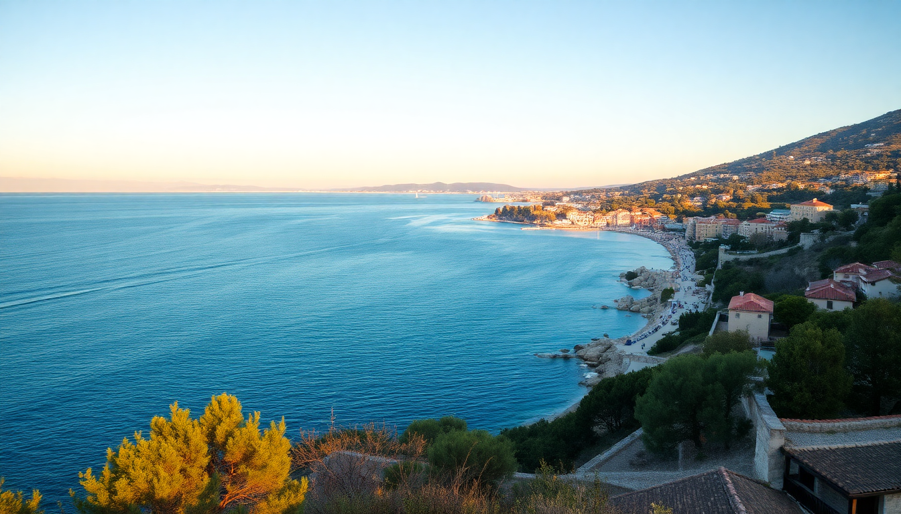

Best Beaches in Croatia: Istria & Kvarner Gulf Guide

I spent two weeks driving the coast from Pula up to Rijeka, hopping between pebbly coves and concrete sunbathing platforms. The beaches here aren’t the long sandy stretches you picture in the Caribbean—they’re rugged, rocky, and often surprisingly crowded. But once you know where to go, you get crystal-clear water, decent shade from pine trees, and a fraction of the crowds that plague Dubrovnik. Here’s what I found.
Which beaches near Rovinj are actually worth the walk?
Rovinj’s old town is gorgeous, but the beaches right below it—like Monte Mulini—are packed shoulder-to-shoulder by 10 a.m. Skip those. Instead, head south along the Zlatni Rt (Golden Cape) forest park. It’s a 25-minute walk from the old town, or a quick bike rental from Bike Planet Rovinj. The water is clean, and the pine shade means you don’t need an umbrella.
- Lone Bay – A pebbly strip with a small bar. Gets busy, but the water drops off fast, so it’s good for snorkeling. I saw small fish and a few sea urchins—wear water shoes.
- Punta Corrente – More rocks than pebbles, but quieter. I found a flat slab of rock to lie on and had the spot to myself for an hour on a Tuesday.
- Cape Kamenjak – About 15 minutes south by car. It’s a nature reserve with dozens of tiny coves. The southernmost point has a cliff jump (maybe 5 meters) that locals use. Park at the entrance and walk in—the dirt road is rough.
If you want a proper beach bar with loungers, Mulini Beach is fine, but expect to pay 80 kuna (€10) for a deck chair. I preferred packing my own towel and finding a free slab of rock.
Is Pula’s beach scene as crowded as people say?
Yes, Pula Arena Beach (right below the Roman amphitheater) is a concrete slab with ladders into the sea. It’s convenient if you’re sightseeing, but the water is murky from boat traffic. I’d only go there for a quick dip after visiting the arena. For a real swim, you need to drive 15 minutes south.
- Hawaii Beach (Stoja) – A small pebbly cove with a grassy area behind it. The water is clear, and there’s a snack bar selling overpriced ćevapi (skip it, walk to Konoba Batelina in nearby Banjole for real seafood). Parking is a nightmare in July—arrive before 9 a.m.
- Valkane Beach – A mix of concrete platforms and pebbles. It’s popular with families because the water stays shallow for 20 meters. There’s a playground and a beach volleyball court. I grabbed a beer at Caffe Bar Valkane and watched kids splash around.
- Uvala Veruda – A longer pebble beach with a campsite behind it. It’s less crowded than Hawaii because it’s further from the city center. The water is deep enough for swimming laps.
If you’re staying in Pula proper, Hotel Histria has a private concrete beach with sun loungers. It’s not fancy, but it’s quiet and the water is clean. I didn’t stay there, but I used their beach bar once—€4 for a large Karlovačko, which felt fair.
What are the best family-friendly beaches in Opatija?
Opatija is the old-school resort town of the Kvarner Gulf. The beaches here are mostly concrete promenades with ladders, not natural coves. That sounds unappealing, but it actually works great for families: no sharp rocks, easy water access, and plenty of cafes within 50 meters.
- Slatina Beach – The main beach right in front of the Hotel Kvarner. It’s a concrete platform with a few pebbly patches. Water is shallow for about 15 meters, so kids can wade safely. The promenade behind it has gelato shops and benches. I had a cone at Slasticarnica Kornati—the pistachio flavor was solid.
- Lido Beach – A smaller, quieter concrete beach near the Angiolina Park. It’s shaded by old pine trees, which is rare for Opatija. The water drops off faster here, so it’s better for older kids who can swim.
- Ičići Beach – A 20-minute walk south along the coastal path. It’s a pebbly beach with a gentle slope. Less crowded than Slatina, and there’s a small playground. I saw a family with a toddler and a inflatable float—no issues.
Opatija’s beaches are all free, but loungers and umbrellas cost around €15 per set. I skipped them and just used my towel on the concrete. The water temperature in July was 24°C—pleasant, not cold.
Does Rijeka have any decent beaches, or is it just a port city?
Rijeka is a working port, so the beaches right in the city center (like Plaža Kantrida) are mediocre—concrete slabs with views of cargo ships. But if you drive 15 minutes west, you hit the Opatija Riviera (see above) or the Kostrena peninsula, which has hidden gems.
- Plaža Glavanovo – A small pebbly beach in the Kostrena area. It’s popular with locals because it’s sheltered from the wind. The water is deep and clear. I parked on the street for free and walked down 100 steps.
- Plaža Preluk – A long pebble beach with a campsite behind it. It’s a bit run-down, but the water is clean and there’s a snack bar. I wouldn’t go out of my way, but if you’re staying in Rijeka, it’s a 10-minute drive.
- Plaža Sablićevo – Right next to the Kantrida swimming pool complex. It’s a concrete platform with a diving board. The water is surprisingly clear given the port nearby. I saw teenagers jumping off the board all afternoon.
Honestly, I’d skip Rijeka’s beaches and use the city as a base for day trips to the islands (Krk is 20 minutes by ferry from Rijeka Port) or the beaches in Opatija. The bus from Rijeka to Opatija runs every 20 minutes and costs €2.
When is the best time to visit these beaches?
June and September are the sweet spots. July and August are packed, and the water temperature peaks at 25°C in August, but the crowds are relentless. I visited in late June and had plenty of space at every beach except Hawaii in Pula.
- June – Water is around 21°C. Still cool, but swimmable. Crowds are thin, and parking is easy. I swam at Lone Bay in Rovinj and had the cove to myself at 5 p.m.
- July-August – Peak season. Expect wall-to-wall people at Slatina and Mulini. Book parking in advance (I used P+ app for Rovinj). Water is warmest, but the sea can get hazy from sunscreen runoff.
- September – Water stays warm until mid-month (around 22°C). Crowds vanish after the first week. I had Cape Kamenjak almost to myself on a weekday.
If you’re flexible, aim for the last week of June or the first week of September. The weather is still hot (30°C+), but the beaches are manageable.
FAQ
Are the beaches in Istria and Kvarner Gulf free? Yes, all public beaches are free. You only pay for sun loungers, umbrellas, or parking. Some hotel beaches (like Monte Mulini) are technically private, but you can usually walk through them if you’re just swimming. No one kicked me out.
Do I need water shoes? Absolutely. Most beaches are pebbly or rocky, and sea urchins are common in shallow water. I wore Speedo Surfwalker shoes and was glad I did—stepping on a urchin hurts like hell. You can buy them at Decathlon in Rijeka for about €15.
Can I rent a boat to reach hidden coves? Yes, and it’s worth it. In Rovinj, rent a small motorboat from Rovinj Rent-a-Boat (€80 for half a day) and explore the islands off the coast. The coves on Sveta Katarina island are almost empty even in July. Just anchor carefully—the seabed is rocky.